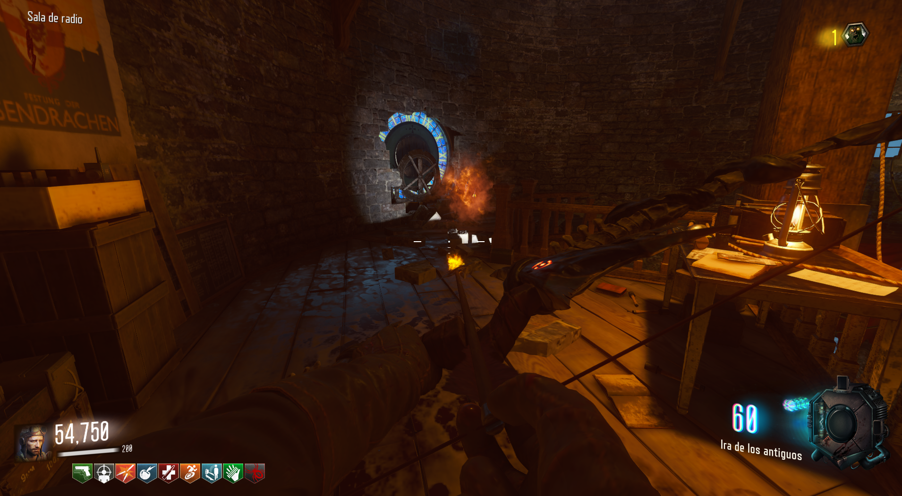
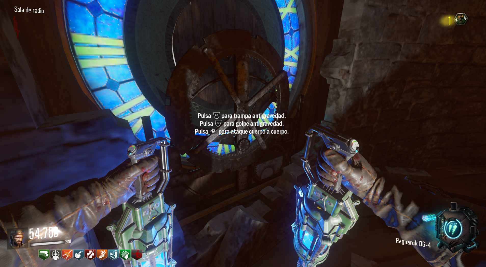
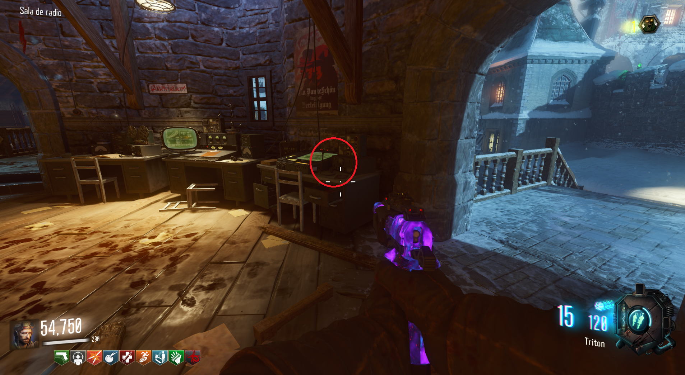
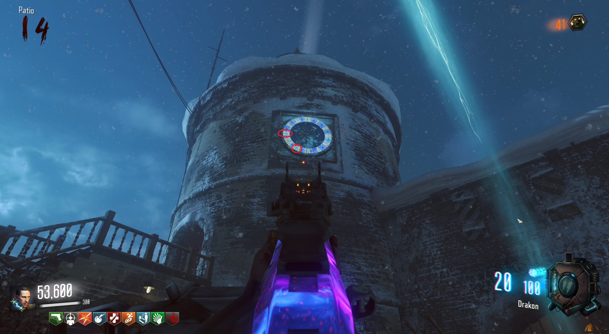
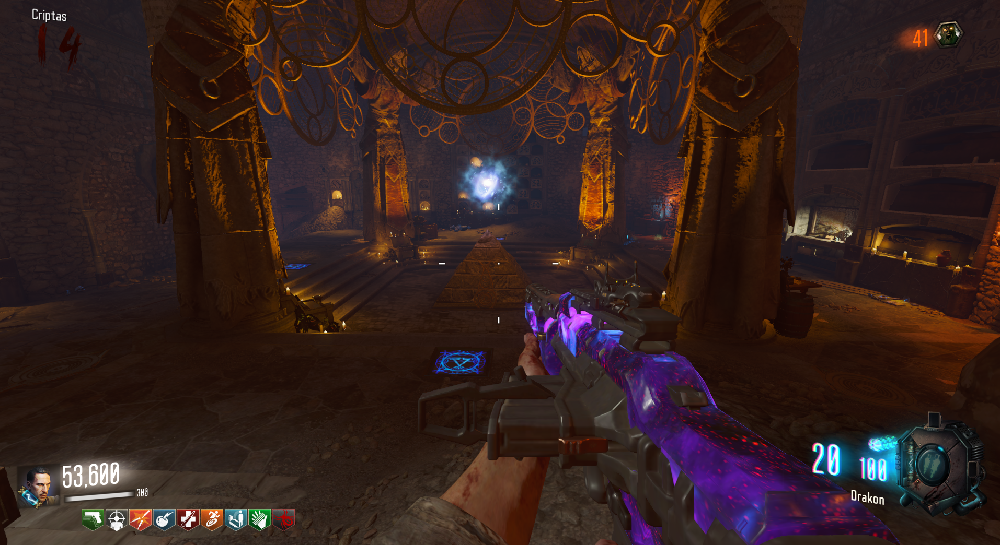
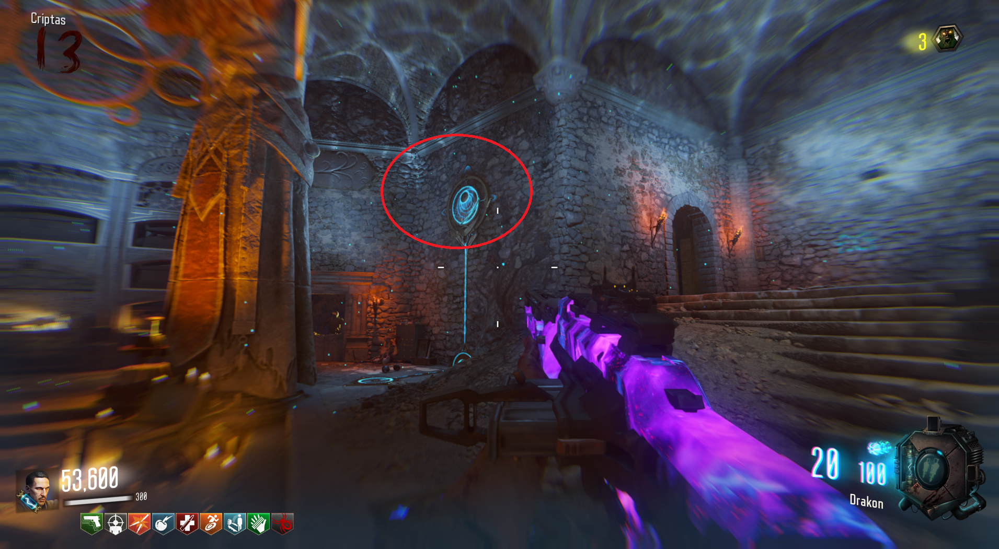
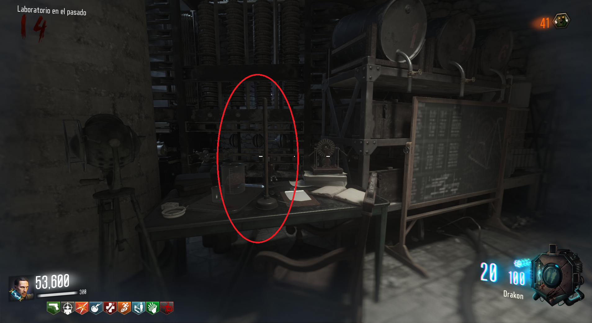
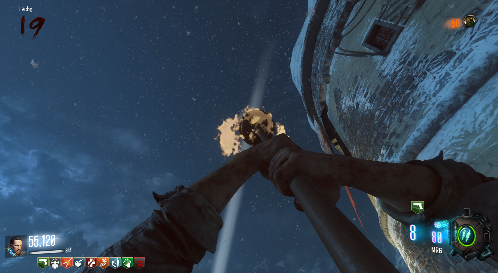

Requisitos:
Tener el arco y las Púas Ragnarok
Lo primero será disparar a la zona donde se consigue la flecha de fuego.

Después dejaremos las púas en el suelo, lo más cerca del reloj que podamos (Las podemos recoger cuando queramos).

El reloj de la torre empezará a avanzar y en la palanca de debajo, podremos pararlo o dejar que continúe.

Tendremos que pararlo justo cuando las agujas marquen las 9:35 (IX con la flecha corta y VII con la larga).

Si lo hacemos correctamente, se oirá un sonido de la campana del reloj y al bajar a la pirámide veremos un orbe blanco (Esto indica que lo hemos hecho bien).

Ahora esperaremos a que se active la zona de no gravedad y pasaremo caminando varias veces por estos símbolos.

Seremos teletransportados al pasado y tendremos que llevarnos el destapacaños en la mesa a la derecha del teleporter.

De esta manera ya tendríamos el destapacaños.
Si matamos a un Panzer con cualquier arma, durante 1 minuto el destapacaños tendrá fuego y matará a cualquier enemigo de un solo toque, incluído el panzer.
